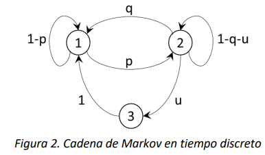
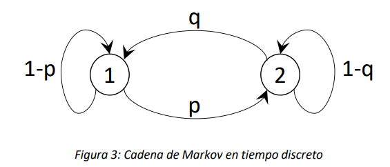

9. Análisis de tiempos promedios#
En este capítulo se presentan las técnicas para el análisis de tiempos promedio en cadenas de Markov. En particular, se consideran en primer lugar los tiempos promedio acumulados de ocupación de los estados de una cadena de Markov en un horizonte de tiempo finito y después se tratan los tiempos de primera pasada (first hitting times, en inglés). Estos dos tipos de análisis aplican para cualquier Cadena de Markov, sin importar su clasificación. Finalmente, se presenta el análisis de tiempos promedio de absorción, lo cual es relevante solo para cadenas absorbentes.
9.1. Introducción#
Todos los análisis que se han visto hasta el momento se realizan para cuantificar probabilidades, sea en el transitorio o en estado estable. A partir de dichas probabilidades, es posible estimar varios tiempos promedio de interés (p. ej. el tiempo promedio necesario para completar un servicio o el tiempo promedio de funcionamiento de una máquina). Estos tiempos son de interés ya que muchas veces las características de un sistema influencian directamente la calidad percibida.
Dada una Cadena de Markov, continua o discreta, siempre es posible hacer varias preguntas sobre los tiempos del modelo. Consideramos por ejemplo las dos siguientes:
Si ahora el proceso se encuentra en el estado \(i\) y observamos su evolución por un intervalo de tiempo de duración conocida, ¿cuánto tiempo pasará en promedio el proceso en el estado \(j\) durante la totalidad de este intervalo?
Si ahora el proceso se encuentra en el estado \(i\), ¿cuánto tiempo pasará en promedio antes de que alcance por primera vez el estado \(j\)?
Estas dos preguntas buscan determinar dos cantidades de tiempo muy diferentes por su naturaleza. Además, para el caso particular de Cadenas de Markov absorbentes, es posible preguntarse, además:
Si ahora el proceso se encuentra en el estado transitorio \(i\), ¿cuánto tiempo pasará en promedio en el estado transitorio \(j\) antes de llegar a alguno de los estados absorbentes?
9.1.1. Tiempo de ocupación#
En la primera pregunta, dado el estado inicial y un intervalo de tiempo de duración conocida, se quiere conocer el tiempo promedio total, o acumulado, de ocupación de un estado. Este tiempo se llama tiempo promedio de ocupación o tiempo de ocupación. Si \(i\) es el estado inicial del proceso y \(j\) el estado cuyo tiempo de ocupación es de interés, denotaremos con \(M_{i,j}^{t}\) al tiempo promedio de ocupación en el estado \(j\) dado que se inicia en el estado \(i\) en un intervalo de tiempo de duración \(t\) para una Cadena de Markov de tiempo continuo. De manera análoga, denotaremos con \(M_{i,j}^{n}\) al tiempo promedio de ocupación en el estado \(j\) dado que se inicia en el estado \(i\) en un intervalo de tiempo de \(n\) pasos para una Cadena de Markov de tiempo discreto. También, con la notación \(\mathbf{M}^{t}\) y \(\mathbf{M}^{n}\) se denota la matriz de los tiempos promedio de ocupación condicionados al estado inicial para el caso continuo y para el caso discreto, respectivamente, es decir, las matrices cuyos elementos son los \(M_{i,j}^{t}\) y los \(M_{i,j}^{n}\), respectivamente.
Ejemplo 1
Considere la CMTC \(\{ X(t),t \geq 0\}\) con espacio de estados \(S = \{ A,B,C\}\) cuyo diagrama de tasas de transición es:

Para este modelo, podríamos preguntar cuánto tiempo pasa en promedio la cadena en el estado \(A\), dado que en el tiempo \(0\) se encuentra en este mismo estado, en el intervalo de tiempo \(\lbrack 0,t\rbrack\). El valor de dicho tiempo es precisamente el elemento \(M_{A,A}^{t}\) de la matriz \(\mathbf{M}^{t}\). Así mismo, el tiempo promedio que la cadena pasa en el intervalo \(\lbrack 0,t\rbrack\) en el estado \(B\), dado que al tiempo \(0\) se encuentra en \(A\) será dado por el elemento \(M_{A,B}^{t}\) de la matriz \(\mathbf{M}^{t}\). Ahora bien, si el estado de la cadena en el tiempo \(0\) es desconocido y solo se conoce la distribución de probabilidad de los estados, por ejemplo \(\overrightarrow{\alpha} = \left( \alpha_{A},\alpha_{B},\alpha_{C} \right)\), donde \(\alpha_{A} + \alpha_{B} + \alpha_{C} = 1,\) el tiempo promedio de ocupación del estado \(A\) se obtendrá multiplicando el vector \(\overrightarrow{\alpha}\) por la matriz \(\mathbb{M}^{t}\), y seleccionando el elemento que corresponde al estado \(A\). Eso es equivalente a calcular un valor esperado de los tiempos promedio de ocupación ponderados por las probabilidades iniciales.
Nota
Para el caso de las CMTD, el tiempo promedio de ocupación tendrá que ser interpretado en términos discretos, es decir corresponde al número promedio de veces que la cadena ocupa o visita el estado de interés.
9.1.2. Tiempo de primera pasada#
En el caso de la segunda pregunta, dado el estado inicial, se quiere conocer el tiempo promedio necesario para visitar algún estado por primera vez. A este tiempo se le llama tiempo de primera pasada. Si \(i\) es el estado inicial del proceso y \(j\) el estado de interés se denota con \(m_{i,j}\) el tiempo de primera pasada al estado \(j\) dado el estado inicial \(i\). En este caso, la notación es la misma sin importar que la cadena sea continua o discreta. Análogamente al caso anterior, se denota con \(\mathbf{m}\) a la matriz que recoge todos los tiempos de primera pasada condicionados al estado inicial de la cadena.
Ejemplo 2
Considere la CMTD \(\{ X_{n},n \geq 0\}\) con espacio de estados \(S = \{ 1,2,3\}\) cuyo diagrama de probabilidades de transición es:

Figura 2. Cadena de Markov en tiempo discreto
Si la cadena está actualmente en el estado 3, el tiempo promedio (en este caso discreto, es decir el número de pasos de evolución necesarios) para alcanzar por primera vez el estado 2 estará dado por el elemento \(m_{3,2}\) de la matriz\(\ \mathbf{m}\). Igual que en el ejemplo anterior, si sólo se conoce el estado inicial en términos de una distribución de probabilidad de estado, es posible calcular los tiempos de primera pasada multiplicando el vector de las probabilidades iniciales por la matriz \(\mathbf{m}\).
9.1.3. Tiempo antes de la absorción#
Para esta pregunta, dado el estado inicial transitorio, se quiere conocer el tiempo promedio que el proceso pasa en otro estado transitorio antes de alcanzar cualquier estado absorbente. Dado que el estado final de interés es absorbente, una vez que la cadena lo alcanza nunca lo dejará. Este se llama tiempo antes de la absorción.
9.2. Cálculo de tiempos en Cadenas de Markov de Tiempo Discreto#
9.2.1. Tiempo de ocupación#
Empecemos con un ejemplo sencillo. Consideremos la Cadena de Markov en tiempo discreto con \(\{ X_{n},n \geq 0\}\) con espacio de estados \(S = \{ 1,2\}\) cuyo diagrama de probabilidades de transición es el siguiente:

Preguntémonos cuáles son los elementos de la matriz \(\mathbf{M}^{n}\) al aumentar el valor de \(n\), o sea el número de pasos de evolución.
Abordemos el problema considerando el caso \(n = 0\), es decir cuando la cadena no hace ninguna transición y supongamos que el estado inicial de la cadena es\(\ 1\). En este caso, es fácil entender que obviamente \(M_{1,1}^{0} = 1\), ya que la cadena visita exactamente 1 vez el estado inicial 1, y \(M_{1,2}^{0} = 0\), ya que la cadena en 0 pasos no puede visitar el estado 2. Si el estado inicial fuese el 2, tendríamos que \(M_{2,1}^{0} = 0\) y \(M_{2,2}^{0} = 1\). Esto equivale a decir que:
Es decir, la matriz \(\mathbf{M}^{0}\) es la matriz identidad. Es fácil intuir que la identidad \(\mathbf{M}^{0}\mathbb{= I}\) es válida para cualquier Cadena de Markov en tiempo discreto.
Consideremos ahora los elementos de la matriz \(\mathbf{M}^{1}\). Supongamos que el estado de la cadena es 1. Ahora \(M_{1,1}^{1}\), el número promedio de visitas al estado 1 cuando se hace sólo una transición. Este número será igual a 1 (lo cual es cierto porque la cadena empieza en dicho estado) más otra visita si la cadena queda en el estado 1, lo cual pasa con probabilidad \(1 - p\). Entonces se tiene que \(M_{1,1}^{1} = 1 + 1 \cdot (1 - p)\). Con este mismo razonamiento, podemos obtener que \(M_{1,2}^{1} = p\). Si el estado inicial es 2, se obtiene \(M_{2,2}^{1} = 1 + 1 \cdot (1 - q)\) y \(M_{2,1}^{1} = q\). En forma matricial se obtiene que:
Es también intuitivo entender que la expresión \(\mathbf{M}^{1}\mathbb{= I +}\mathbf{P}\) es válida para toda Cadena de Markov en tiempo discreto. Ahora, podemos tener una intuición acerca de la estructura aditiva de las matrices \(\mathbf{M}^{n}\) que hemos empezado a vislumbrar con el ejemplo. El número de visitas promedio que se acumulan en un horizonte de \(n\) pasos podrá ser calculado como la suma de las visitas que se hacen en \(0\) pasos, \(1\) paso, \(2\) pasos y así sucesivamente hasta \(n\) pasos. En cada paso el número de visitas es 0 o 1, y en promedio es igual a la probabilidad de que la cadena visite el estado. En \(k\ \)pasos de evolución, si la cadena empezó en el estado \(i\), se encontrará en el estado \(j\) con probabilidad \(p_{ij}^{k}\), es decir, el elemento \(i,j\) de la matriz \(\mathbf{P}^{k}\). Así que, sumando sobre todos los pasos, se obtiene para \(M_{ij}^{n}\)
Donde \(p_{ij}^{0} = 1\) si y solo si \(i = j\). Entonces, para la matriz \(\mathbf{M}^{n}\) se obtiene la siguiente fórmula
En la subsección 8.4.1 (anexo) se encuentra la demostración formal para la expresión mostrada anteriormente.
9.2.2. Tiempos de primera pasada#
Para calcular los tiempos promedios necesarios para alcanzar por primera vez el estado \(j\) a partir de un estado inicial \(i\) \((i \neq j)\), consideremos otra vez el ejemplo sencillo de la Figura 3. Supongamos que se quiere determinar el tiempo de primera pasada \(m_{1,2}\). Podemos determinar el número promedio de pasos necesarios con el siguiente razonamiento. Dado que la cadena empieza en el estado 1, el número de pasos necesarios para alcanzar 2 será:
Exactamente igual 1 si la próxima transición de la cadena es de 1 a 2, lo cual ocurre con probabilidad \(p\);
Exactamente igual a 1 más el número de pasos necesarios para alcanzar el estado 2 a partir de 1, si la cadena queda en el estado 1, lo cual ocurre con probabilidad \(1 - p\).
Si calculamos el promedio de este número obtenemos para \(m_{1,2}\) la siguiente expresión (recursiva):
Solucionando la expresión (2), es posible hallar \(m_{1,2} = \frac{1}{p}\), lo cual corresponde al número promedio de veces que la cadena repite el ciclo en el estado 1, más 1 (la transición al estado 2). Si la probabilidad \(p\) de transición es muy cercana a 1, tendremos, como se espera, que \(m_{1,2}\) será cercano a 1.
Ahora generalizamos el procedimiento utilizado en el ejemplo a Cadenas de Markov de tiempo discreto en general. Consideremos la Cadena de Markov en tiempo discreto \(\{ X_{n},n \geq 0\}\) con espacio de estados \(S\). Sea \(i\) el estado en el que inicia la cadena, \(\mathbf{P} = \lbrack p_{ij},\ \ i,j \in S\)] la matriz de las probabilidades de transición a un paso, y \(m_{i,j}\) el número promedio de pasos necesarios para que la cadena alcance, por primera vez, el estado \(j\) dado el estado inicial \(i\).
Si la cadena se encuentra en el estado \(i\), visitará el estado \(j\) :
En 1 solo paso, transitando directamente de \(i\) a \(j\), con probabilidad \(p_{ij}\) (si \(p_{ij} = 0\), esta opción no será posible);
En más pasos, transitando primero (en 1 paso) del estado \(i\) a algún estado \(k \neq j\), lo cual ocurre con probabilidad\(\ p_{ik}\), y después transitado del estado \(k\) al estado \(j\), lo cual en promedio requiere \(m_{k,j}\) pasos.
Si calculamos el promedio de los casos (que son mutuamente exclusivos) obtenemos la siguiente expresión:
La expresión (3) define \(m_{i,j}\) en función de los tiempos de primera pasada \(m_{k,j}\). Esto significa que para determinar \(m_{i,j}\) será en efecto necesario escribir las ecuaciones para los tiempos \(m_{k,j}\) y solucionar el sistema de ecuaciones lineales resultantes. El número de ecuaciones lineales que será necesario solucionar simultáneamente depende de la topología de la cadena. En el ejemplo de la cadena en la Figura 3, para el cálculo de \(m_{1,2}\) es suficiente una sola ecuación. Sin embargo, para cadenas cuya matriz de probabilidades de transición sea poco dispersa (con pocos elementos nulos o cero), el número de ecuaciones tiende a ser cercano al número de posibles transiciones.
9.3. Cálculo de tiempos en cadenas de Markov de Tiempo Continuo#
9.3.1. Tiempo de ocupación#
Por la naturaleza continua de este tipo de cadenas, el cálculo de los tiempos promedio de ocupación en un intervalo \(\lbrack 0,t\rbrack\) requiere evaluar integrales de la matriz exponencial. Como ya vimos, si \(\mathbf{Q}\) es la matriz de las tasas de transición de la cadena de Markov en tiempo continuo, la matriz
es la matriz de las probabilidades condicionales de estado, análoga a la matriz \(\mathbf{P}^{n}\) de las cadenas discretas. El elemento \(i,j\) de \(e^{\mathbf{Q}t}\) es entonces la probabilidad que la cadena en el tiempo \(t\) se encuentre en el estado \(j\) dado que en el tiempo \(0\) se encontraba en el estado \(i\). Así como en el caso discreto la matriz \(\mathbf{M}^{n}\) se obtiene sumando las matrices de probabilidades condicionales \(\mathbf{P}^{j}\) para todo valor del número de pasos \(j\), en el caso continuo se integra la matriz \(e^{\mathbf{Q}t}\) por todo valor posible de \(t\). Entonces resulta que:
La integral anterior no tiene una solución sencilla y en general solo puede calcularse a través de métodos numéricos.
9.3.2. Tiempo de primera pasada#
Los tiempos promedio de primera pasada en cadenas continuas se calculan de manera totalmente análoga al caso discreto. Sea \(\{ X_{n},n \geq 0\}\) una cadena de Markov en tiempo continuo con espacio de estados \(S\) cuyo estado inicial es \(i\), y cuya matriz de tasas de transición es \(\mathbf{Q}\). El tiempo necesario, en promedio, para que la cadena alcance por primera vez el estado \(j,\ \)o sea \(m_{i,j}\), es el siguiente:
Si la cadena alcanza \(j\) en 1 solo paso, transitando directamente de \(i\) a \(j\), lo cual ocurre con probabilidad \(q_{ij}/( - q_{ii})\), el tiempo necesario será en promedio \(1/q_{ij}\) (si \(q_{ij} = 0\), esta opción no será posible);
Si la cadena alcanza \(j\) en más pasos, transitando primero (en 1 paso) del estado \(i\) a algún estado \(k \neq j\), lo cual ocurre con probabilidad \(q_{ik}/( - q_{ii})\), pasará un tiempo promedio \(1/q_{ik}\) en el estado \(i\) y después para transitar del estado \(k\) al estado \(j\) requerirá en promedio un tiempo igual a \(m_{k,j}\).
Usualmente los cálculos de los tiempos promedio de primera pasada, tanto para cadenas discretas como para cadenas continuas, se realizan utilizando software y métodos computacionales, en nuestro caso el lenguaje R. En la sección de anexos se encuentra una manera de calcular analíticamente los tiempos de primera pasada para cadenas de tiempo continuo.
9.4. Anexos#
9.4.1. Demostración Formal de la expresión (1)#
Enseguida se proporciona una prueba formal de la expresión (1). Fijamos el estado \(i\) inicial y el estado \(j\), y definimos la siguiente variable indicadora \(Z_{k}\):
y sea \(N_{j}(n) = Z_{0} + Z_{1} + \cdots + Z_{n}\). La variable aleatoria \(N_{j}(n)\) es el número de visitas al estado \(j\) en \(n\) pasos de evolución de la cadena. Ahora, con esta definición, tenemos:
Ya que el promedio es distributivo respecto a la suma se obtiene:
Dado que \(Z_{k}\) toma sólo valores 0 y 1, las contribuciones al promedio solo existirán cuando el valor de la variable sea 1, así que se obtiene
Y por la definición misma de \(Z_{k}\) se obtiene finalmente:
Entonces, \(M_{ij}^{n} = \sum_{k = 0}^{n}p_{ij}^{k}\), lo cual en forma matricial nos da la expresión (1).
9.4.2. Calculo Manual de los tiempos promedio de primera pasada en cadenas de tiempo continuo#
Si calculamos el promedio de los casos (que son mutuamente exclusivos) obtenemos la siguiente expresión:
Si como en el caso anterior se denota con \(1/r_{i} = - 1/q_{ii}\) (nótese que \(q_{ii}\) es negativo por definición) el tiempo promedio que la cadena pasa en el estado \(i\), podemos finalmente escribir la expresión (5) como sigue